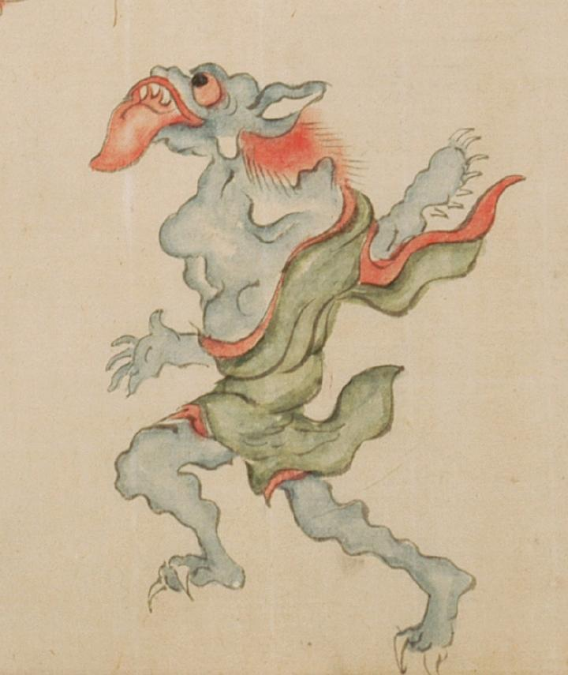

← 图鉴索引

上を仰ぎ見る青鬼。大きな舌を出し歩いている。
出典：親書誌：U426_nichibunken_0054：百鬼夜行絵巻；ヒャッキヤギョウエマキ／日付：2006／資源識別子：U426_nichibunken_0054_0004_0001
Copyright (c)2010- International Research Center for Japanese Studies, Kyoto, Japan. All rights reserved.